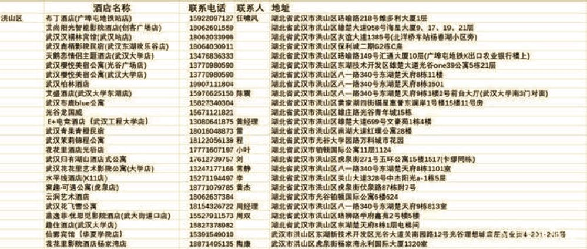

武汉真实口述：最无辜的人是他们……
原文链接 备份链接 作 者：叶青 中南财经政法大学教授、博导 湖北省统计局副局长 正和岛蓝色岛邻 来 源：正和岛（ID：zhenghedao） 我算是外来的武汉人。 1979年10月从老家福建建阳到湖北财经学院（即现在的中南财经政法大学） …

1月25日，是中国鼠年的第一天，也是武汉封城的第3天。非常时期，武汉成了全国人民挂念、祈福的城市。封城后，武汉人民的真实生活是什么样？正和岛自今日起特别推出《叶青：我在武汉疫区的第N天》专栏。叶青是一位定居武汉40年的市民，也是一名学者和官员。接下来的一段时间，他会用笔记录下亲身经历的、观察到的武汉。
这将是一份宝贵的史料。感谢他，我们得以更真切地感知到武汉疫情。让我们一起为武汉加油！
作 者：叶青 中南财经政法大学教授、博导 湖北省统计局副局长 正和岛蓝色岛邻
封 面：新华社
来 源：正和岛（ID：zhenghedao）

仿佛老天知道武汉在闹“新型肺炎”，鼠年正月初一整整下了一天的小雨。
我们一家四口已经是第二天没有出门。听从指挥，宅在家里，就是最大的贡献。最近央视宣传“三字经”——宅、洗、戴。
儿子说以前的正月初一好像都是在路上，大都是回福建老家看望父母，或者到福建沿海考察民营企业。因为“新型肺炎”，今年总算是在家过个完整的年。
大家干自己的事，也看看手机，说说“新型肺炎”的事。吃的更有营养一点，睡眠充足，睡到自然醒，也不需要早上六点起床了。
医生说：吃好睡足，可以提高免疫力，才能够抵抗病毒。
记得日本人说，健康就是“三快”：吃得快、睡到快、拉得快。我的经验是，拉得快就要喝红茶、砖茶、黑茶，比如武夷山大红袍等。
我作为网络人士，在转发正能量信息，写微信公众号“中部之声”的稿子—《叶青看财经》《叶青看数据》系列之外，还多了一件事——了解民情，通过各个渠道递交社情民意。大家有什么想法可以发到我的微信上。
这些建议可以交给中国民主促进会湖北省委员会信息员，信息员把会內各位专家的建议加以梳理，形成有分量的建议上交。一般交给三个方面：民进中央、省委统战部、省政协。
我自己还是民进中央特约研究员，可以单独交给民进中央的信息员。
再就是在省政协的APP上，也可以通过手机上交社情民意信息。另外，湖北省十大正能量网络大V也有统一行动。
最近，我又找到新的通道，就是在微信上有“国务院客户端”小程序，可以为全国两会、监督政府、监督新型肺炎治理措施落实等建言献策与反映问题。这两天我已经提了两条，把网友的一些好建议加以充实提高上交。
大家还可以看看电视剧——“追剧”。
24日，中宣部、国家广电总局紧急行动，精选《外交风云》《外科风云》《急诊科医生》《在远方》《那座城这家人》《大江大河》《最美的青春》《精英律师》《破冰行动》《飞行少年》等10部优秀电视剧，分别协调这些电视剧版权拥有方向湖北广播电视台、武汉广播电视台捐赠播出版权，让优秀电视剧陪伴湖北省武汉市等地区人民群众共克时艰。非常感谢。
在这个特殊的时期，我建议大家看看《急诊科医生》，属于科普电视剧。我正好几年前看过，可以增加保健知识。其中有一集还正好是讲病毒传染的。有的网友惊呼：2017年的这部电视剧就预测到“新型肺炎”了。这是一句玩笑话。

我们来看看25日的武汉。
一是在24日各省医疗队进入武汉之后，25日大批军队医疗队在武汉开展救治工作。
国家卫健委组建6支共1230人的医疗救治队驰援武汉，同时召集6支后备梯队随时待命。上海、广东、军队3支医疗队已到达武汉投入工作。
军队医疗队分别由陆军、海军、空军军医大学抽组，每支150人，分指挥组、普通患者治疗分队和危重症患者救治分队，配备呼吸科、感染性疾病科、医院感染控制科、重症监护室等医学专家，他们中有不少都参加过小汤山抗击非典、援非抗埃的经历。
广大市民是一片叫好声。外省专家、解放军医疗队来了，武汉人就更放心了。说一个不该说的话，那天钟南山一离开，我的心里直打鼓：怎么就走了呢？我们现在所做的一切，他都建议过或者思考过。
武汉虽然是医疗重镇，去年有同济、协和、人民、中南、武大口腔5家医院进入全国百强医院，但是，在这样一场病毒战中，显然是难以为继的。
问题又来了。武汉周边的城市也是最危险的。当地网民提出了“灯下黑”的问题，即武汉危险，武汉周边的城市“一墙之隔”，也很危险，防护用品也是非常短缺，抗击病毒力量更是薄弱。仙桃医院等也挂出了接受捐赠的公告。这要引起湖北省领导的高度重视。
武汉城市圈要一体防控“新型肺炎”。
二是远程治疗要出来走一走了。
25日起，长江网武汉城市留言板正式开通24小时在线问诊，首批20名专家已经集结完毕。包括呼吸科、消化内科、心血管内科、神经内科、肾内科、感染科、妇科、产科、儿科、急诊科、耳鼻喉科、眼科、皮肤科、心理科等在内的武汉地区和全国200余名医生专家，组成专家咨询团队，及时线上解答市民的问题。对有代表性的问题，还将在长江日报、武汉晚报上及时回复。
这就是医疗上的线上线下的结合。

武汉的网上群众工作部——市民留言板是2017年的一大创造。我自己遇到什么问题都会留言，问题很快可以得到解决。后来又有了企业直通，反映企业遇到的问题。现在用于在线问诊，可以不接触，不见面，解决医疗问题。外地可以学习。
这个时候，为什么听不到乌镇互联网医院的声音？出来走两步吧！
三是征用医院与宾馆。
24日，省委书记要求武汉市要动用各级力量，千方百计增加隔离留观场所和定点医院床位，对所有疑似患者一律无条件收治，并进行有效隔离，加强分类诊疗，优化诊疗流程，保障发热病人及时得到收治。
25日，武汉市在早期2家定点医院和61家发热门诊的基础上，第一批、第二批、第三批分别征用7家、3家、14家综合医院，参照感染性疾病防治机构的基本要求，临时改造成为发热病人收治医院。
目前收治疑似和确诊病例的床位达4000余张。另6000余张床位将于本月底前提供使用。根据疫情发展情况，及时征用第四批医院。这才让人放心。
这么多的本地与外来的医务人员住在哪里？
24日，武汉当地酒店业人士自发组织了“武汉医护酒店支援群”，征集不带中央空调的酒店自愿为武汉地区各大医院的一线医护人员免费提供住宿。
目前能够为医护人员提供免费入住的酒店覆盖了包括武汉市洪山区、武昌区、汉口区、汉阳区、蔡甸区等在内的11个区域。其中洪山区、武昌区支援的酒店数量相对较多，均已超过30家，并且已有酒店住满；汉口区最缺住宿。
目前已经加入的100余家酒店已经出现了满员入住甚至超员入住的情况，有部分支援酒店还被征用作为了隔离观察区。因此，“武汉医护酒店支援群”群主呼吁，希望能够有更多酒店业主加入到活动中来。


关键时刻，体现了企业家的社会责任感与无私奉献精神。我们为他们点个赞。武汉谢谢你们！
四是再建一座雷神山“新型肺炎”治疗医院。
25日下午3点半，武汉市新型冠状病毒感染的肺炎疫情防控指挥部决定在蔡甸区火神山医院之外，半个月之内再建一所“小汤山医院”——武汉雷神山医院，新增床位1300张。
火+雷，共同联手对付新型冠状病毒肺炎。这让我们看到了武汉市的办事效率越来越高。
五是“配车”与“封车”。
24日，武汉市发布新型肺炎防控指挥部第8号通告。通告指出，为了解决居家市民出行不便等问题，全市紧急征招6000台出租车，分配给中心城区，由社区居委会统一调度使用，为社区内生活不方便的居民提供上门送菜、送药、送餐服务。
25日下午，各区名单已经出来。10个中心城区（7个行政区及经开、东湖、风景3个功能区简称“中心城区”）合计1159个社区。武汉市交通局启动紧急预案，召集9家巡游和网约车出租车企业进行部署安排，征用出租车6000台（每个社区至少配车4台）。
我已经看到我们社区的出租车的车号、司机名字、手机号码，以及社区网格员、物业管理员的通讯信息，有事与他们联系。
下午起床，看到一个更惊人的消息——中心城区“封车”。从“封路”到“封车”，这也太快了吧！
为控制人员流动引发的传染风险，自2020年1月26日0时始，除经许可的保供运输车、免费交通车、公务用车外，中心城区区域实行机动车禁行管理。市民有需要外出，可以找社区的出租车。
这个消息的冲击力太大了。
很快，很多市民上街，直奔超市，又兴起一股“抢购潮”。网友反映，有的地方连共享单车都有点紧张。
立刻，在网上出现了截然不同的两种观点：
有的市民认为，不让私车上街，市民怎么购物、怎么就医？有必要吗？私车就是相对封闭的空间。
也有市民表示理解。“封车”就是为了限制大家随便到医院。有要事可以坐政府提供的出租车外出。
不管怎么样，武汉路上将没有私家车，这是“千载难逢”的事情。
 最后，我们来看看全国的情况。
最后，我们来看看全国的情况。
截至1月25日24时，国家卫生健康委员会收到30个省（区、市）累计报告确诊病例1975例，现有重症病例324例。累计死亡病例56例，累计治愈出院病例49例。现有疑似病例2684例。
让我们记住大年初一这个冰冷的死亡数字——56例。全体中国人正在做的事，就是让这个死亡数字增长得慢一点，再慢一点，直到零增长。
截至25日15时，全国共24个省、市、自治区启动重大突发公共卫生事件一级响应，涵盖总人口超过12亿。这在世界上都是少有的数字。
世界上原来只有16亿人的人均GDP超过1万美元，2019年中国达到这个数字，因此，一夜之间，世界上就有30亿人的人均GDP超过1万美元。
这就是“温氏定律”：2003年11月，温家宝总理在接受《华盛顿邮报》专访时，首次向公众披露了自己的一个“简单而又复杂的乘除法”，即“一个很小的问题，乘以13亿，都会变成一个大问题；一个很大的总量，除以13亿，都会变成一个小数目”。
根据突发公共卫生事件性质、危害程度、涉及范围，突发公共卫生事件划分为特别重大（Ⅰ级）、重大（Ⅱ级）、较大（Ⅲ级）和一般（Ⅳ级）四级。其中，Ⅰ级响应属于最高级别的响应。Ⅰ级响应是发生特别重大突发公共卫生事件，省指挥部根据国务院的决策部署和统一指挥，组织协调本行政区域内应急处置工作。
比如，我老家福建对所有往福建方向车辆人员进行逐车逐人检查，从1月25日(正月初一)10：30开始，沈海高速福鼎入口关闭，该高速口只出不进，需要往福州方向车辆请绕道铁将大道从八尺门高速口上高速，需要往浙江方向车辆请从福鼎北（邦福高速口）或分水关高速口上高速。
几天前，大家还在震惊武汉的“封城”，现在他们也全副武装、全城戒备，与武汉也差不多了。
我还要呼吁一下，恳请各地的朋友善待身边的武汉人。
有的地方，比如河南人把与湖北连接的道路都倒上土，形成路障，这可以理解。但是，加油站不让湖北的车辆加油就不好了。加了油才能够离开。有的地方不让湖北武汉客人住宿，也是不合理的。
最后做个总结。从25日的情况来看，外部的救治力量进入武汉；武汉的管控措施越来越得力；社会上的恐惧感在降低；全国形成了共防共治的格局。
终于真正有了“万众一心、众志成城”的氛围，距离胜利的那一天越来越近了。

排版 | 钟灵
审校 | 羽婷主编 | 叶正新
原文链接 备份链接 作 者：叶青 中南财经政法大学教授、博导 湖北省统计局副局长 正和岛蓝色岛邻 来 源：正和岛（ID：zhenghedao） 我算是外来的武汉人。 1979年10月从老家福建建阳到湖北财经学院（即现在的中南财经政法大学） …
原文链接 备份链接 【财新网】（记者 张帆）1月24日中午12点左右，作为疫情爆发中心地的湖北省姗姗启动重大突发公共卫生事件一级响应。而在此之前，从1月23日起，已有浙江、广东、湖南、北京、上海、天津、安徽、重庆、四川等多个省份启动一级 …
原文链接 备份链接 武汉各大医院发热门诊的紧张态势已有一周，七家定点医院启动才两天已被压到极限。 武汉不缺顶级医院，不缺顶级专家，不缺顶级医疗能力，缺的是公共卫生防控能力、行政效率和疫情处理流程。 在患者和大医疗机构之间，未见到基层 …
原文链接 备份链接 武汉某大型医院血液科医生朱洪亮表示，其实这个季节除了新型冠状病毒之外，还有很多如甲流、乙流等病毒流行，这些病毒也会引起发热和肺炎等症状，比较常见。但现在一些发热病人都涌向发热门诊，面对这种压力，武汉的医疗资源是承受不了 …
原文链接 备份链接 隔离病房中的除夕丨对话武汉肺炎病人 2020-01-24 22:06 作者：陈婷 曹学平 来源：中国经营网 本报记者 陈婷 曹学平 广州报道 1月24日，正值除夕。 在这个本该全家团圆吃年夜饭的日子，对于正在武汉市金银 …